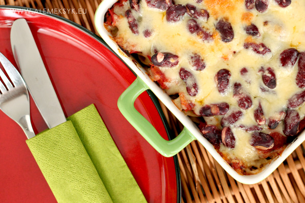

Składniki na porcje dla 2 osób:
- 250 g makaronu świderki (w naszym wypadku był to pełnoziarnnisty ale można też zwykły)
- 5-6 pomidorów
- pół cebuli
- 1 ząbek czosnku
- 1 mała puszka fasoli czerwonej (ok. 200 gram)
- 150 g chorizo
- 150 g szynki
- 2 jajka
- ser cheddar (ok. połowa szklanki)
- sól i pieprz do smaku
- kolendra suszona lub zmielona w ziarnach - około łyżki
- kumin - około pół łyżeczki
- casserole-makaronowe-skladniki

Przygotowanie:
Kiełbasę chorizo pokrój w plasterki i przysmaż na patelni.
Szynkę pokrój w kosteczkę i dorzuć do chorizo.
Smaż dalej przez około 3-4 minuty.
Pomidory umyj. Pokrój na większe kawałki. Wrzuć do blendera.
Dodaj pół cebuli i jeden ząbek czosnku.
Zblenduj wszystko razem.
Przelej zblendowane pomidory na patelnię do chorizo i szynki.
Smaż do czasu aż woda z pomidorów odparuje.
Dodaj sól, pieprz oraz zmieloną kolendrę i kumin.
Można także dodać suszoną kolendrę.
W międzyczasie ugotuj makaron al dente.
Naczynie żaroodporne wysmaruj oliwką wsyp ugotowany makaron.
Jajka roztrzep w misce, posól i polej nimi równomiernie makaron.
To sprawi,że zapiekanka zetnie się podczas zapiekania i nie będzie się rozsypywać na talerzu.
Następnie polej masą pomidorową.
Na wierzch posyp fasolką.
Na koniec posyp startym serem cheddar.
Rozgrzej piekarnik do temperatury 200 st. C. i zapiekaj przez około 20 min.
Znakiem dobrze zapieczonego dania jest roztopiony ser o złocistym, rumianym kolorze.
Źródła